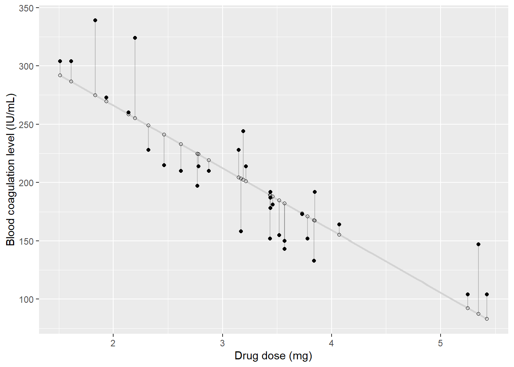
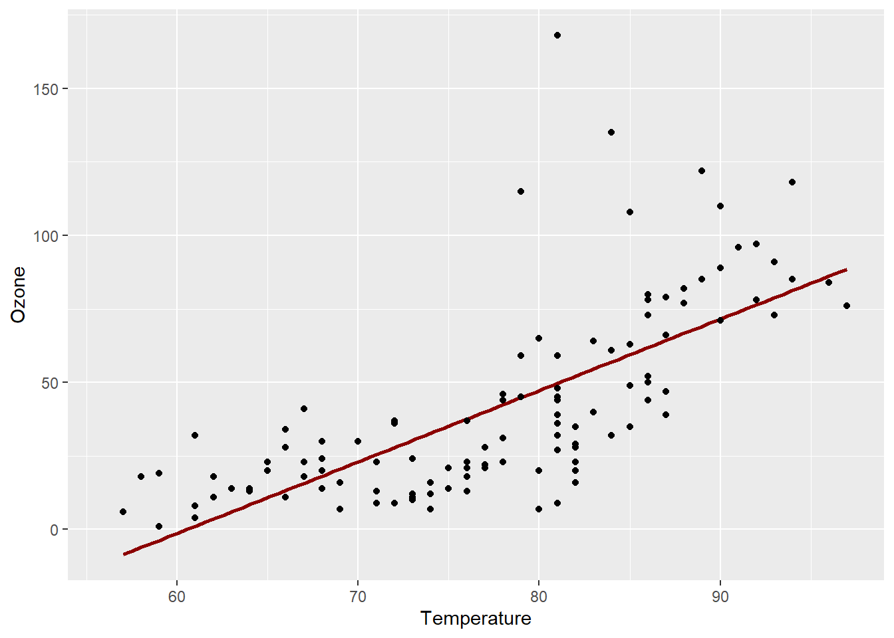

3 Linear models
Consider the study of the effect of a new drug for hemophilia, by analyzing the level of blood coagulation after the administration of various amounts of the new drug. Researchers may be interested in knowing whether the drug affects on the level of blood coagulation. The simplest statistical model to address this scientific question is the linear regression model
\[ y_i = \beta_0 + \beta_1x_i + \epsilon_i, \]
where \(i = 1, \ldots, n\) and \(i\) denotes the \(i\)-th observation.
However, the response variable (\(y\)) can be explained by a different independent variables (\(x\)). In other words, the response variable can be the sum of effects of some independent factors (\(x=(x_1,\dots,x_p)\)).
The model assumption implies that the expected response is the sum of the factors effects:
\[ \begin{align} E[y]=x_1 \beta_1 + \dots + x_p \beta_p = \sum_{j=1}^p x_j \beta_j = x'\beta . \tag{7.1} \end{align} \]
Clearly, there may be other factors that affect the the level of blood coagulation. We thus introduce an error term, denoted by \(\epsilon\), to capture the effects of all unmodeled factors and measurement error. The implied generative process of a sample of \(i = 1, \ldots, n\) observations is thus:
\[ \begin{align} y_i = x_i'\beta + \varepsilon_i = \sum_j x_{i,j} \beta_j + \varepsilon_i , i=1,\dots,n . \tag{7.2} \end{align} \]
or in matrix notation
\[ \begin{align} y = X \beta + \varepsilon . \tag{7.3} \end{align} \]
This figure illustrates the linear regression fit of our problem

$title
[1] "Blood coagulation as a function of drug doses"
attr(,"class")
[1] "labels"Model parameters can be estimated by solving the Ordinary Least Squares (OLS) problem
\[ \begin{align} \hat \beta= \text{argmin}_\beta \{ \sum_i (y_i-x_i'\beta)^2 \}, \tag{7.4} \end{align} \]
and in matrix notation
\[ \begin{align} \hat \beta= \text{argmin}_\beta \{ \Vert y-X\beta \Vert^2_2 \}. \tag{7.5} \end{align} \]
This minimization problem has an unique solution given by:
\[\widehat{\mathbf{\beta}}=[\mathbf{X}^T\mathbf{X}]^{-1}\mathbf{X}^T\mathbf{y}=\mathbf{R}^{-1}\mathbf{Q}^T\mathbf{y}\]
3.1 OLS estimation in R
We are now ready to estimate some linear models with R. We will use the airquality data from the datasets package (installed by default), that contains daily air quality measurements in New York, May to September 1973.
head(airquality) Ozone Solar.R Wind Temp Month Day
1 41 190 7.4 67 5 1
2 36 118 8.0 72 5 2
3 12 149 12.6 74 5 3
4 18 313 11.5 62 5 4
5 NA NA 14.3 56 5 5
6 28 NA 14.9 66 5 6We carry out the OLS estimation to investigate whether temperature has any influence on ozone levels
mod <- lm(Ozone ~ Temp, data=airquality)
summary(mod)
Call:
lm(formula = Ozone ~ Temp, data = airquality)
Residuals:
Min 1Q Median 3Q Max
-40.729 -17.409 -0.587 11.306 118.271
Coefficients:
Estimate Std. Error t value Pr(>|t|)
(Intercept) -146.9955 18.2872 -8.038 9.37e-13 ***
Temp 2.4287 0.2331 10.418 < 2e-16 ***
---
Signif. codes: 0 '***' 0.001 '**' 0.01 '*' 0.05 '.' 0.1 ' ' 1
Residual standard error: 23.71 on 114 degrees of freedom
(37 observations deleted due to missingness)
Multiple R-squared: 0.4877, Adjusted R-squared: 0.4832
F-statistic: 108.5 on 1 and 114 DF, p-value: < 2.2e-16We can visualize our results using ggplot2 as follows:
library(ggplot2)
p <- ggplot(data = airquality, aes(x = Temp, y = Ozone)) +
geom_smooth(method = "lm", se=FALSE, color="darkred") +
xlab("Temperature") + ylab("Ozone") +
geom_point()
p